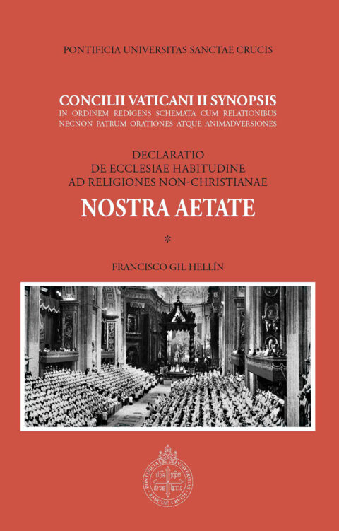
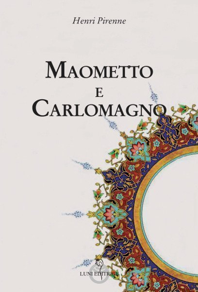

16:57 · 4 OPERE
“...et mundus eum non cognovit...” (Giovanni 1:10)
Il filo del discorso
Il versetto Giovanni 1,10 offre il punto di partenza per una riflessione sul rapporto tra esperienza religiosa e vita sociale. Dr Divago si interroga sulla lettura del prologo giovanneo alla conclusione della messa tradizionale e interpreta il mancato riconoscimento di Cristo come un monito alla distanza critica dal mondo. Il discorso si apre con una polemica contro il paragrafo 3 di Nostra aetate e torna più volte al rapporto tra cristianesimo e islam, con richiami al Corano. Nella seconda parte la discussione si allarga alla storia del Mediterraneo e alla fine dell’unità romana, richiamando una tesi riconducibile a Henri Pirenne. I giudizi sul dialogo interreligioso, sulle riforme liturgiche e sull’ideologia contemporanea esprimono la posizione del relatore. Il titolo del libro storico non è pronunciato: l’identificazione proposta resta probabile.
I libri nel discorso

Nostra aetate
Note sul riferimento
Volume di documentazione: EDUSC, 2013 · sinossi della dichiarazione
La voce riguarda la dichiarazione del 1965. L’immagine mostra la sinossi critica curata da Francisco Gil Hellín, con documentazione sul testo conciliare: è un volume di riferimento, non un’edizione mostrata o identificata nel video.
Dichiarazione nominata più volte, con riferimento esplicito al paragrafo 3; grafia del titolo normalizzata sul documento ufficiale.

Vangelo secondo Giovanni
Note sul riferimento
Copertina del volume completo: San Paolo, 2014 · Nuova Versione dai Testi Antichi · edizione di riferimento
Vangelo secondo Giovanni è un libro della Bibbia. L’immagine mostra il volume completo San Paolo di riferimento, non un’edizione autonoma del singolo libro e non una versione identificata nella citazione.
Il prologo di Giovanni è nominato e viene citato il versetto 1,10. Il passo latino inizia intorno a 284 secondi; la traduzione o edizione usata non è identificata.

Corano
Note sul riferimento
Copertina: BUR Classici, edizione aggiornata
Edizione con introduzione, traduzione e commento di Alessandro Bausani, a cura di Layla Mustapha Ammar. Anno della ristampa non dedotto dalla copertina; nessuna edizione attribuita al video.
Richiamo esplicito al Corano e a formulazioni parafrasate nel corso della polemica. Non vengono forniti numeri di versetto né una traduzione identificabile.

Maometto e Carlomagno
Identificazione probabile
Note sul riferimento
Copertina: Luni Editrice · traduzione di Anna Maria Martelli
Copertina autentica della scheda Luni Editrice. L’identificazione del riferimento è probabile; nessuna edizione o traduzione è attribuita al video.
Il richiamo alla disgregazione dell’unità mediterranea per effetto delle conquiste islamiche coincide con la tesi di Pirenne. Nome poco chiaro nella fonte automatica e titolo non pronunciato: identificazione probabile.